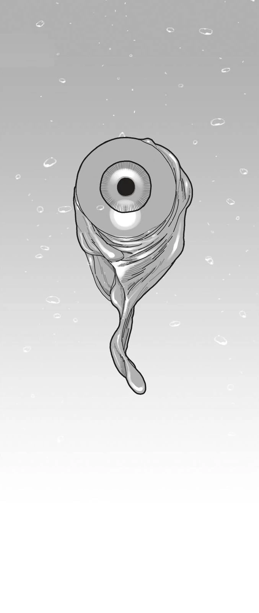
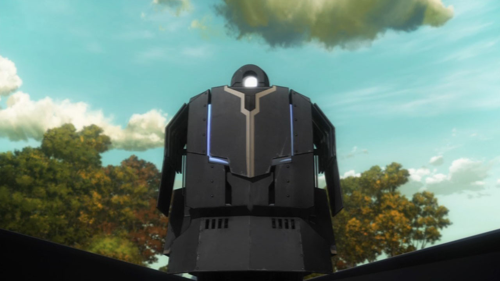

A Psychic refers to one who has a mutation, an Abnormal Ability gained as a result of the brain being able to comprehend a "channel" (common sense, or perception of reality) not native to humans. It is a different type of Mystery than Magecraft, although similar in nature.
Psychic Power, also referred to as Extrasensory Perception (ESP), is a catch-all term to refer to the circuits that cause supernatural phenomena to occur. Unlike magecraft, which can be taught and practiced, inherent ability is an absolute necessity. Psychic Powers are the ultimate ability of humans, who have become an existence independent of nature.
They only appear by chance (for example, they can be the result of an accident causing a permanent change in the brain), and are limited to one generation, although it is possible to force them to become a genetic trait carried by blood.
Generally Psychics still have both the normal "channel", the perception all human beings have, and their abnormal "channel". However, there rarely exist those who only possess the latter who cannot live within society's rules of common sense, These are known as Unfit Existences and tend to go crazy.
There are several powers Psychics can have such as Precognition and Retrocognition but the most known cases are Mystic Eyes.
|  |
|---|
| Preserved Mystic Eye of Flame by the Rail Zeppelin. |
Mystic Eyes are a form of supernatural power concentrated in the eyes, granting the power to interfere with the outer world through sight alone. They are the oldest magecraft known to humans, deriving from neither ritual nor study.
Mystic Eyes usually work like Single Action spells and are activated through the use of magical energy. Since they have their own Magic Circuits, Mystic Eyes are able to produce magical energy and cast spells all on their own.
It is possible to suppress the power of Mystic Eyes with a Mystic Code called Mystic Eye Killers. They are commonly made into glasses because Mystic Eyes are a power derived from the oculus.
Within the Clock Tower, Mystic Eyes have their own system of ranking called Noble Color. Normal Mystic Eyes shine red or green, strong ones glow a luminous Gold, and Mystic Eyes that fall in the realm of Gods glimmer with multiple colors, like Jewels' or Rainbows.
so the ranking goes: Rainbow > Jewel > Gold > Red. The higher the rank the more rare they are, like Jewel and Rainbow ranks are so rare that their very existence is hypothetical and can't even be verified.
"A Noble Color is like the movement of the stars compared to normal Magic Circuits" is a common saying in the World of Magecraft.
if one wants to gain true Mystic Eyes, there is no option to acquire a transplant except the Rail Zeppelin, the Mystic Eye Collection Train that runs through the forests of Europe, collecting any and all Mystic Eyes. Mystic Eyes are something developed and rooted within one's own body, so even removing them is incredibly difficult. But the Rail Zeppelin is an exception to that, ignoring all problems of physical rejection and the like, and not just extracting them, but capable of transplanting Mystic Eyes directly into a new host without risk of failure.
The Rail Zeppelin also invites possessors of strong Mystic Eyes to come sell their eyes, under threat of being killed and having their Mystic Eyes ripped out if they do not comply.
|  |
|---|
| The Mystic Eye Collection Train: Rail Zeppelin |
Anyone who studied magecraft knows this, whether from the Mage's Association, the church, or a standalone guy.
Info known by higher positions or specific fields in The Mage's Association.